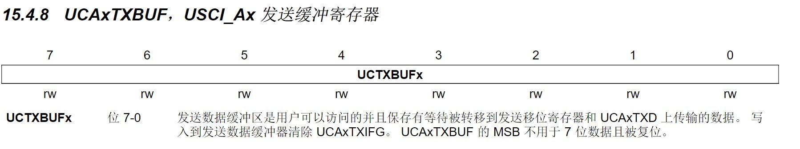

msp430g2之示波器(ADC UART)
用的RX TX P1_1 P1_2 和串口屏RX接TX TX 接RX 波特率115200
ADC用的是1.4通道。

从energia官网下载的pinmaps（energia是一个高度类似arduino的编译环境，虽然不能断点调试只能串口调试，但是官网这个真的香，TI家的板子大部分都有，而且还能导入到ccs调试）。
先过一遍通信原理吧
并行串行
并行通讯：同一时刻，可以传输多个bit位的信号，有多少个信号位就需要多少根信号线。
串行通讯：同一时刻，只能传输一个bit位的信号，只需要一根信号线。
同步异步
异步通信，是指通信双方按照事前约定好的时钟速率（波特率）来进行通信，因为没有公共的时钟线，所以通信双方的数据必须“整齐划一”。比如uart就是异步通信。而IIC SPI都需要时钟线 是同步通信。而stm32的usart则是通用同步和异步收发器，可以主动提供时钟，既可以当uart用也可以当spi用
而同步通信的双方拥有公共时钟，按时钟信号来更新数据，所以数据流不一定要“整齐划一”。比如IIC SPI
单工双工
同时收发就是全双工，比如打电话。
数据能收能发，但要分时进行就是半双工，比如对讲机。
只能单向通信就是单工了，比如广播。
UART特性
uart属于串行，异步（无需时钟线），全双工（加上它是串行，所以有两条数据线，一个TX 一个RX）


我们写的是八位的数据位

代码
#include <msp430.h>
int i=0;
int x=0;
//double p=0;
float volt=0;
int trans=0;
short temp[180]={};
short compare[6]={};
float y=0;
void UART_INIT() //初始化UART端口
{
P1SEL |= BIT1 + BIT2 ; // P1.1 = RXD, P1.2=TXD
P1SEL2 |= BIT1 + BIT2 ; // P1.1 = RXD, P1.2=TXD
UCA0CTL1 |= UCSSEL_2; // 选择SMCLK(1MHz)作为时钟源
UCA0BR0 = 139; // 8MHz 115200
UCA0BR1 = 0; // 8MHz 115200
UCA0MCTL = UCBRS2 + UCBRS0; // Modulation UCBRSx = 5
UCA0CTL1 &= ~UCSWRST; // USCI 软件复位
IE2 |= UCA0RXIE; // 使能USCI_A0 RX中断
}
void SendString(char *s) //UART发送字符串
{
while(*s!='\0')
{
UCA0TXBUF = *(s++);
__delay_cycles(1500);
}
}
void ClearScreen()
{
__delay_cycles(1000);
SendString("CLS(0);\x0d\x0a"); //Caution:\x0d\x0a
__delay_cycles(1000);
}
void line(int x,int y,int z)//z是上一个点的纵坐标
{
// PL(x-1,z,x,y,1)
// 0 1 2 3 4 5 6 7 8 9 10 11 12 13 14 15 16 17 18 19
char l[]={'P','L','(','a','b','c',',','z','z','z',',','x','x','x',',','y','y','y',',','1',')',';','\x0d','\x0a','\0'};
l[3]=(x-1)/100+48;
l[4]=((x-1)%100)/10+48;
l[5]=(x-1)%10+48;
l[7]=z/100+48;
l[8]=(z%100)/10+48;
l[9]=z%10+48;
l[11]=x/100+48;
l[12]=(x%100)/10+48;
l[13]=x%10+48;
l[15]=y/100+48;
l[16]=(y%100)/10+48;
l[17]=y%10+48;
SendString(l);
__delay_cycles(1000);
}
void free(int x)
{// 0 1 2 3 4 5 6 7 8 9 10 11 12 13 14 15
char l[]={'P','L','(','a','b','c',',','0',',','e','f','g',',','2','2','0',',','0',')',';','\x0d','\x0a','\0'};
//BOXF(x-1,0,x+2,239,0)
// PL(X,0,X,220,0)
l[3]=x/100+48;
l[4]=(x%100)/10+48;
l[5]=x%10+48;
l[9]=x/100+48;
l[10]=(x%100)/10+48;
l[11]=x%10+48;
SendString(l);
__delay_cycles(1000);
}
void Sendpoint(int x,int y)
{
char B[]={'P','S','(','a','b','c',',','e','f','g',',','1',')',';','\x0d','\x0a','\0'};
B[3]=x/100+48;
B[4]=(x%100)/10+48;
B[5]=x%10+48;
B[7]=y/100+48;
B[8]=(y%100)/10+48;
B[9]=y%10+48;
SendString(B);
// __delay_cycles(1000);
}
/*初始化屏幕显示函数,返回主界面时调用*/
void ScreenInit(int x,int y,int trans)
{
char c[]={'D','S','1','6','(','2','4','0',',','5','0',',','\'','a','.','c','d','V','\'',',','1',')',';','\x0d','\x0a','\0'};//前面发的是2 4 0 的asc
c[13]=trans/100+48;
c[15]=(trans%100)/10+48;
c[16]=trans%10+48;
SendString(c);
Sendpoint(x,y);
}
int j;
int z=0;
int main()
{
WDTCTL = WDTPW | WDTHOLD; // stop watchdog timer
BCSCTL1 = CALBC1_16MHZ;
DCOCTL = CALDCO_16MHZ;
UART_INIT();
__delay_cycles(1000);
ClearScreen();
SendString("PL(5,5,5,239,1);\x0d\x0a");
SendString("PL(0,230,319,230,1);\x0d\x0a");
SendString("DS12(290,210,'t',1);\x0d\x0a");
SendString("DS12(9,5,'u',1);\x0d\x0a");
// SendString("TPN(2);\x0d\x0a");//发回区域编码
// SendString("BTN(2,250,155,318,200,1);\x0d\x0a");//跑飞
// SendString("DS48(253,175,'跑飞',1,0);\x0d\x0a");
// SendString("BTN(1,250,100,318,145,3,0);\x0d\x0a");//正常
// SendString("DS48(253,115,'正常',1,0);\x0d\x0a");
// _EINT(); //开总中断
ADC10CTL0 &= ~ENC;//配置前先关
//ADC10CTL0 =ADC10ON + ADC10IE; // ADC10ON, interrupt enabled
ADC10CTL0 =ADC10SHT_3+ADC10ON + ADC10IE;//ADC的中断开
//这里sref值默认0，基准电压是VCC3.3和GND,四个时钟周期，
ADC10CTL1 = INCH_4+ADC10SSEL_3; // input A4,接1.4,SMCLK子时钟
//采样周期0.00000025s,示波器10khz 0.0001s，采180个点，两次之间0.000000555s,所以要0.000000145s中断
//单通道单次采样
ADC10AE0 |= BIT4; // PA.4 ADC option select
while(1)
{
// ADC10CTL0 |= ENC + ADC10SC; // 打开ADC
while(1)
{ //采5个点
for(j=0;j<=4;j++)
{
ADC10CTL0 |= ENC + ADC10SC;
compare[j]=ADC10MEM;
__delay_cycles(100);//采样还是比较快的，
// 打开ADC
}
if ((compare[2]>compare[3])&&(compare[2]>compare[4])&&(compare[2]>compare[1])&&(compare[2]>compare[0]))
{
break;
}
}
//采集180个点
for(i=0;i<180;i++)
{
ADC10CTL0 |= ENC + ADC10SC; // 打开ADC
__delay_cycles(100);
temp[i]=ADC10MEM;//乘法计算花时间，直接赋值，不要在这个for里面算*10
}
//把180个点打出去
for(i=0;i<180;i++)
{
if(x<180)
{
y=239-(temp[i]*10/1024.0)*23.9;
if((i-1)>=0&&(x-1)>=0)
{
z=239-(temp[i-1]*10/1024.0)*23.9;
line(x,y,z);
}
volt=((temp[i]*10/1024.0))*3.3;
trans=volt*10;
__delay_cycles(1000);
free(x);
SendString("PL(5,5,5,239,1);\x0d\x0a");
SendString("DS12(9,5,'u',1);\x0d\x0a");
SendString("PL(0,230,319,230,1);\x0d\x0a");
SendString("DS12(290,210,'t',1);\x0d\x0a");
// SendString("TPN(2);\x0d\x0a");//发回区域编码
// SendString("BTN(2,250,155,318,200,1);\x0d\x0a");//跑飞
// SendString("DS48(253,175,'跑飞',1,0);\x0d\x0a");
// SendString("BTN(1,250,100,318,145,3,0);\x0d\x0a");//正常
// SendString("DS48(253,115,'正常',1,0);\x0d\x0a");
ScreenInit(x,y,trans);
x++;
__delay_cycles(1000);
}
else x=0;
}
//
__enable_interrupt();
}
}
#pragma vector=USCIAB0RX_VECTOR
__interrupt void USCI0RX_ISR(void)
{
unsigned char rxbuff = UCA0RXBUF; // 读取RXBUF
IFG2&=~UCA0RXIFG;
// if(rxbuff == '1') //正常
// {ClearScreen();}
// // { SendString("DS48(50,50,'正常',1,0);\x0d\x0a");
// // __delay_cycles(50000);}
// if(rxbuff == '2')//跑飞
// { SendString("DS48(50,50,'跑飞',1,0);\x0d\x0a");
// __delay_cycles(50000);}
}
#pragma vector=ADC10_VECTOR
__interrupt void ADC10_ISR(void)
{
//static double p=0;
// p++;
}

这里的按钮热区都被我注释掉了，原因是没有解析[BN:X] 大概得用这种方式解析一下？
#pragma vector=USCI_A0_VECTOR
//2553是AB0_TX有一个，AB0_RX有一个中断向量，可能本来AB是共用的，但好像2553是没用B，嗷，我也不知道
//反正现在5529是TX RX共用一中断向量，要查表看响应的哪个
__interrupt void USCIA0_ISR(void)
{
static unsigned char rxbuff=123;
static unsigned int number;
switch(__even_in_range(UCA0IV,4))
{
case 0: break; // Vector 0 - no interrupt
case 2:
rxbuff = UCA0RXBUF; // 读取RXBUF
UCA0IFG&=~UCRXIFG;
if(rxbuff == '[')
{ iscmd=1;
number=0;
}
else if(rxbuff == ']')
{ iscmd=0;
iscmdok=1;
}
else if(iscmd==1)
{ cmd[number]=rxbuff;
number++;
}
break; // Vector 2 - RXIFG
case 4: break; // Vector 4 - TXIFG
default: break;
}
}
写UI应结合gpumaker和状态机一起用
版权声明：本博客所有文章除特殊声明外，均采用 CC BY-NC 4.0 许可协议。转载请注明出处 做秧歌star的女人